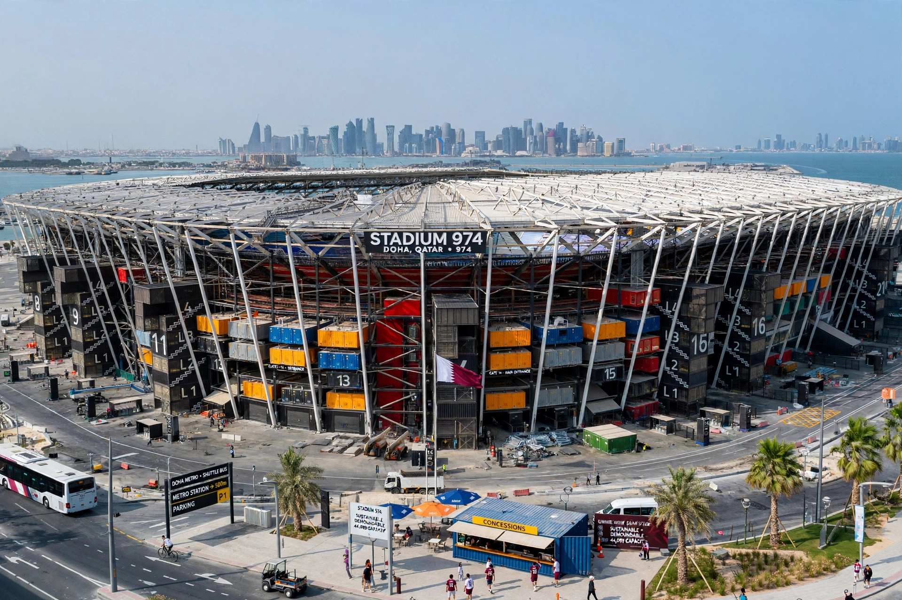

| Stadium 974 | |
|---|---|
| Former name | Ras Abu Aboud Stadium |
| Location | Ras Abu Aboud, Doha, Qatar |
| Capacity | 44,089 |
| Opened | 30 November 2021 |
| Architect | Fenwick Iribarren Architects |

Stadium 974 (Arabic: استاد ٩٧٤), formerly the Ras Abu Aboud Stadium, is a football stadium in Ras Abu Aboud, Doha, Qatar. Opened for the 2021 FIFA Arab Cup, it hosted matches during the 2022 FIFA World Cup.
Designed by Fenwick Iribarren Architects, the stadium was constructed largely from 974 recycled shipping containers — a number that is also Qatar's international dialling code. It was conceived as fully demountable, the first temporary stadium in World Cup history, with its components intended for reuse elsewhere.
The stadium hosted seven matches at the 2022 World Cup, concluding with Brazil's round-of-16 win over South Korea on 5 December 2022. Earlier plans for complete dismantling were repeatedly deferred, and the venue later hosted matches including the 2024 Intercontinental Cup.
2022 FIFA World Cup · Bazaar